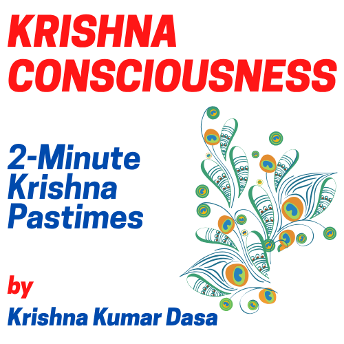
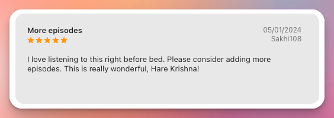
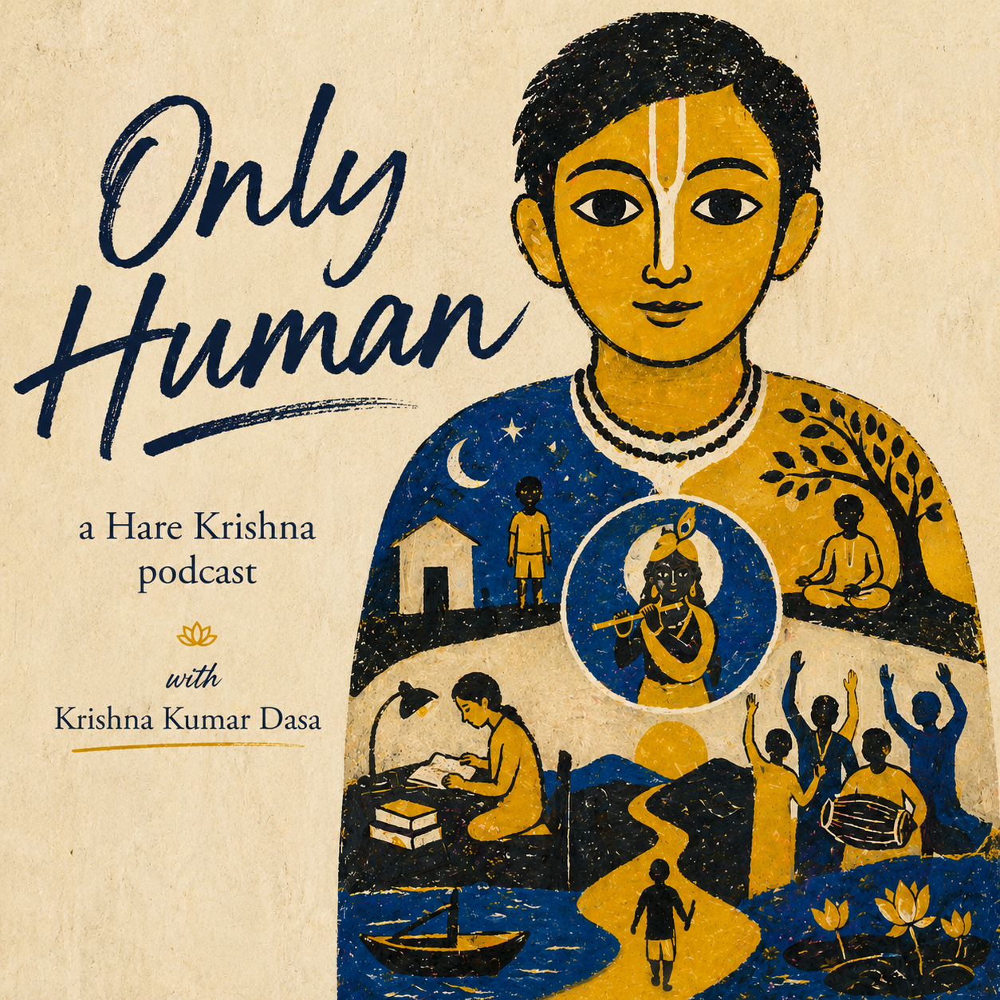

Timeless stories from the Srimad Bhagavatam, Mahabharata, and the Puranas - told through a blend of generative AI films, traditional animation, and live-action. Whether you’re a long-time devotee or just curious about Eastern spirituality, these cinematic retellings aim to be beautiful, accessible, and inspiring.
Please subscribe to our YouTube channel and click the bell icon so you never miss a new release.
Krishna Kumar Dasa is an ISKCON / Hare Krishna practitioner and the creator behind Unlimited Pastimes. Inspired by the timeless wisdom of the Vedic scriptures, the project explores new ways of bringing the pastimes of Lord Krishna and the universe of bhakti to modern audiences.
From writing, drawing, generative AI animation, podcasts, and other digital media, the aim is to use contemporary tools and storytelling mediums to share spiritual narratives that have inspired seekers for generations.
✍️ Read his journal.

Krishna Consciousness is a short-form spiritual podcast by Krishna Kumar Dasa, featuring 2-minute narrations of the pastimes of Lord Krishna as described in the Krishna Book and Śrīmad-Bhāgavatam by His Divine Grace A. C. Bhaktivedanta Swami Śrīla Prabhupāda, Founder-Acharya of the International Society For Krishna Consciousness (ISKCON).
Each episode is designed for simple daily listening - offering a gentle glimpse into the beauty, philosophy, wonder, and devotion found within Krishna’s pastimes.
Listen on:


Only Human is a reflective spiritual podcast exploring the questions that arise in the hearts of everyday people trying to practice Krishna consciousness in the modern world.
Each episode begins with a real question asked during Śrīmad-Bhāgavatam classes and spiritual discussions within the Hare Krishna/ISKCON community - questions about suffering, doubt, purpose, relationships, failure, desire, devotion, fear, material life, and the struggle to genuinely connect with Krishna.
Rather than presenting formal lectures or authoritative answers, this podcast offers personal reflections by the host, Krishna Kumar Dasa, from the perspective of a practicing devotee simply trying to understand spiritual life honestly and sincerely.
Because sometimes the deepest questions are not philosophical... they’re human.
Listen on: